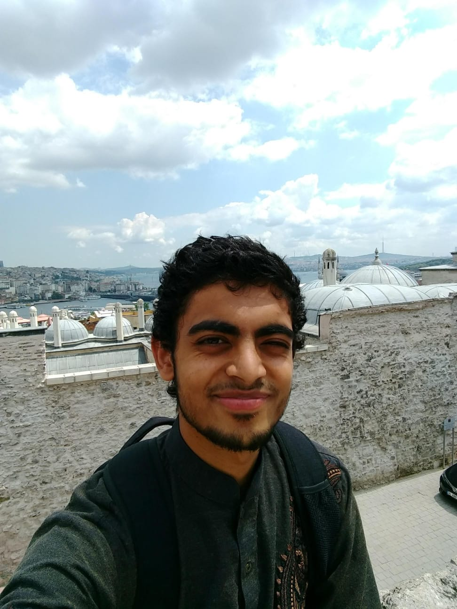

If you wanted to find out more about Umar Begg, then you've come to the right place
Umar was borning in Birmingham with siz siblings. He loves history, which is what lead him to his current career - a history teacher, where in summary, he should at kids for a living.
"The happiness of your life depends on the quality of your thoughts" - Marcus Aurelius